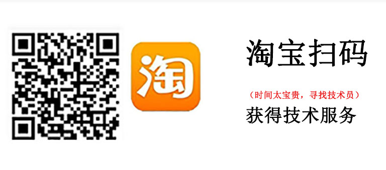

USM-V5
USM-V5是系统总裁出产的PE系统，集成了全面的PE工具，难能可贵的是支持网络以及多款常见的远程工具，适合小白向他人求助。
dism++
dism++是一款基于微软开发的dism改良的PE工具，功能十分全面，适合维护人员使用。
驱动总裁
系统总裁出产的驱动安装工具，有多个版本，满足在线，离线，封装多种需求。
驱动精灵
驱动人生
ScKu
系统总裁出产，用于安装游戏软件运行库补丁，封装系统或安装微软官方镜像需要使用。
微PE
一款小巧的PE系统，内置的部分工具版本老旧不适用，适合个人临时安装系统。
Oem7F7
又名小马oem激活工具，适用于win7全系列激活，激活状态为oem永久激活。
DigitalLicense
又名win10数字许可激活，提取数字证书进行激活，激活状态无法保证，支持kms激活。
DiskGenius
DiskGenius是一款历史悠久的分区工具，一直深受装机人员爱戴，多数PE必备的内置工具，快速分区功能让装机更方便。
傲梅无损分区
如同名字一样，主打无损分区，一键转移系统到固态是一个不错的功能，虽然转移后没有4K对齐。
Scpt
UltraISO